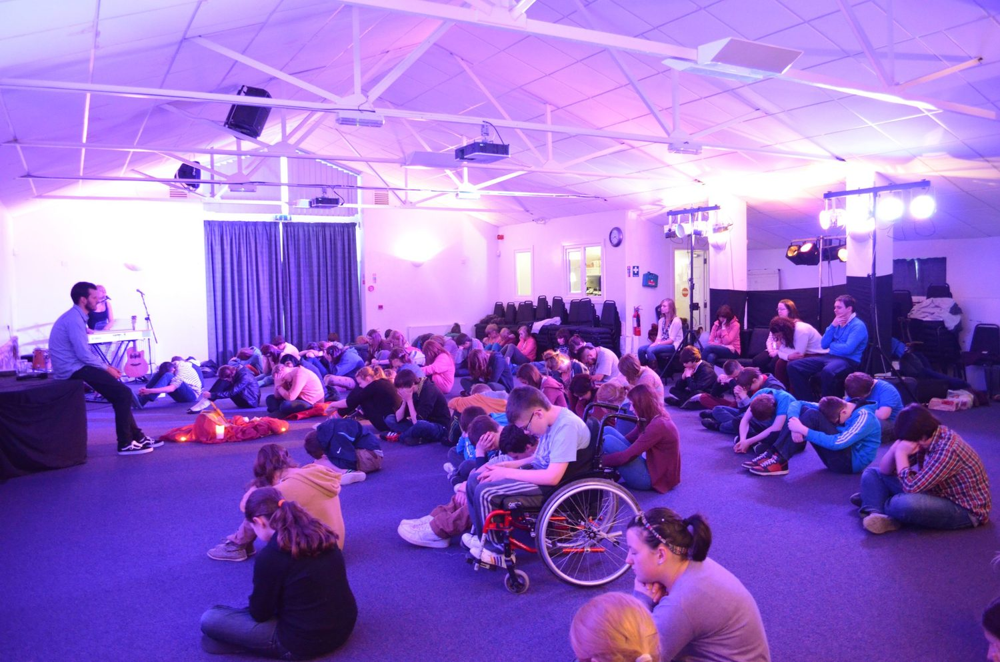

Play, prayer and community — a holistic residential retreat for primary and secondary schools at the Emmaus Youth Village.
Our residential retreats give pupils space to step off their phones, slow down and meet Christ — through the scriptures, through each other, and through a valley that makes you breathe out.
Every programme is built on play, prayer and community, led by our trained team and supervised alongside your own staff. We tailor content to the year group and to what your school is hoping for.
“We came off our phones for two days. Nobody wanted to go home.” — Year 9 pupil
A retreat lands better when it's part of something bigger. These classroom resources help you prepare pupils beforehand and keep the conversation going afterwards.
Links are placeholders — final resources are sent to your lead contact when you book.
Everything you need, whoever you are. Tap a section to open it.
You're coming to the Emmaus Youth Village for a couple of days away with your year group. Here's the honest version:
Your child is in safe, experienced hands. Here's what you need to know:
We make it easy to run a great retreat with minimal admin: